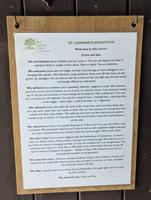

0
0
0
0

0


An anonymous reader quotes a report from CNBC: OpenAI President Greg Brockman concluded his testimony on Tuesday, where he largely rebutted Elon Musk's account of the early years of the startup and negotiations that occurred at the company. Brockman testified that he never made any commitments to Musk about the company's corporate structure, and he never heard anyone else make them. He emphasized that OpenAI is still governed by a nonprofit. "This entity remains a nonprofit," Brockman said, referring to the OpenAI foundation. "It is the best-resourced nonprofit in the world." [...] Brockman, who spoke from the witness stand in federal court in Oakland, California, over the course of two days, also revealed that Musk had enlisted several OpenAI employees to do months of free work for him at Tesla, Musk's electric vehicle company. That work mainly included efforts to overhaul the company's approach to developing self-driving technology as part of the Autopilot team there in 2017. During his two days on the stand, Brockman answered questions about his personal financial ambitions, his understanding of OpenAI's structure and Musk's involvement at the company, which they co-founded with other executives in 2015.
In Musk's testimony last week, the Tesla and SpaceX CEO said that the time, money and resources he poured into OpenAI had been integral to the company's success. He repeatedly said that he helped recruit the company's top talent. Brockman said Tuesday that while Musk was helpful in convincing some employees to take the leap to join OpenAI, he was a polarizing figure for others. "Elon had a reputation of being an extremely hard driver," Brockman said. He added that "certain candidates were very attracted" by Musk's involvement at OpenAI, and that "certain candidates were very turned off." Musk testified last week that a former OpenAI researcher named Andrej Karpathy joined Tesla, but only after he had planned to leave the startup already. Brockman said that Musk, after he hired Karpathy, approached him with "an apology and a confession," about the hire, and that neither Musk nor Karpathy had told him the researcher planned to leave OpenAI before that. Musk was generally not very available for meetings and conversations, Brockman said, so he relied on employees, including Sam Teller and former OpenAI board member Shivon Zilis, as proxies. Brockman testified that open sourcing OpenAI's technology was "not a topic of conversation" during Musk's time with the nonprofit, despite Musk's claims that it was supposed to be central to the organization. He also described tense 2017 negotiations over a possible for-profit arm, saying Musk became angry when equity stakes were discussed. "He said Musk declined the proposal during an in-person meeting, then tore a painting of a Tesla Model 3 car off the wall, and began storming out of the room," reports CNBC. He also demanded to know when the cofounders would leave the company.
Brockman further said Musk wanted control of OpenAI because he disliked situations where he lacked control, citing Zip2 and SolarCity as examples Musk had raised. He also testified that Musk partly wanted control to help fund his broader SpaceX ambition of building a "city on Mars."
CNBC notes the trial will resume at 8:30 a.m. PT on Wednesday, with Shivon Zilis expected to testify. She is the mother of four of Musk's children and a former OpenAI board member.
Recap:
OpenAI President Discloses His Stake In the Company Is Worth $30 Billion (Day Five)
Musk Concludes Testimony At OpenAI Trial (Day Four)
Elon Musk Says OpenAI Betrayed Him, Clashes With Company's Attorney (Day Three)
Musk Testifies OpenAI Was Created As Nonprofit To Counter Google (Day Two)
Elon Musk and OpenAI CEO Sam Altman Head To Court (Day One)
Read more of this story at Slashdot.
Coinbase is laying off about 700 workers, or 14% of its workforce, as CEO Brian Armstrong says the company is restructuring to become "lean, fast, and AI-native." Engadget reports: Armstrong claimed he'd seen engineers "use AI to ship in days what used to take a team weeks" and that non-technical teams in the company are "shipping production code," while Coinbase is automating many of its workflows. "All of this has led us to an inflection point, not just for Coinbase, but for every company," Armstrong wrote. "The biggest risk now is not taking action. We are adjusting early and deliberately to rebuild Coinbase to be lean, fast and AI-native. We need to return to the speed and focus of our startup founding, with AI at our core."
An AI-driven restructuring is only one half of the equation for Coinbase, though. Armstrong wrote that while the company "is well-capitalized, has diversified revenue streams and is well-positioned to weather any storm," the crypto market is down. As such, Coinbase is attempting to become leaner and faster ahead of the next crypto cycle. The company is eliminating some management layers and organizing the business around "AI-native talent who can manage fleets of agents to drive outsized impact," Armstrong wrote. "We'll also be experimenting with reduced pod sizes, including 'one person teams' with engineers, designers and product managers all in one role." That sure sounds like an attempt to get workers to take on more responsibilities.
Read more of this story at Slashdot.
An anonymous reader quotes a report from Wired: Employees at Google DeepMind in London have voted to unionize as part of a bid to block the AI lab from providing its technology to the US and Israeli militaries. In a letter addressed to Google's managing director for the UK and Ireland, Debbie Weinstein, the workers asked the company to recognize the Communication Workers Union and Unite the Union as joint representatives for DeepMind employees. "Fundamentally, the push for unionization is about holding Google to its own ethical standards on AI, how they monetize it, what the products do, and who they work with," John Chadfield, national officer for technology at the CWU, tells WIRED. "Through the process of unionization, workers are collectively in a much stronger place to put [demands] to an increasingly deaf management."
[...] The DeepMind employee tells WIRED that if the staff succeeds in unionizing in the UK, they will likely demand that Google pulls out of its long-standing contract with the Israeli military, and seek greater transparency over how its AI products will be used, and some sort of assurance relating to layoffs made possible by automation. If Google does not engage, the letter states, the employees will ask an arbitration committee to compel the company to recognize the unions. Since the turn of the year, both Anthropic and OpenAI have announced large-scale expansions of their operations in London. CWU hopes the unionization effort at DeepMind will spur workers at those labs into similar action. "These conversations are happening," claims Chadfield. "The workers at other frontier labs have seen what Google DeepMind workers have done. They've come to us asking for help as well." The unionization push began in February 2025 after Alphabet removed a pledge from its AI ethics guidelines that had barred uses such as weapons development and surveillance. "A lot of people here bought into the Google DeepMind tagline 'to build AI responsibly to benefit humanity,'" the DeepMind employee told WIRED. "The direction of travel is to further militarization of the AI models we're building here."
Read more of this story at Slashdot.
Gartner says some VMware customers may find it cheaper to move certain Linux VM workloads to IBM mainframes than to adopt Broadcom's new VMware licensing, especially for fleets of hundreds of Linux VMs and mission-critical apps needing long-term stability. The Register reports: Speaking to The Register to discuss the analyst firm's mid-April publication, "The State of the IBM Mainframe in 2026," [Gartner Vice President Analyst Alessandro Galimberti] said some buyers in many fields are comparing mainframes to modern environments and deciding Big Blue's big iron comes out ahead. "I can build a multi-region cloud application, but things like data synchronization and high availability are things I need to build into application logic," he said. "The mainframe has that in the platform, which shields developers from complexity." He also thinks mainframes are ideally suited to workloads that need many years of transactional consistency and backward-compatibility.
That said, Galimberti doesn't recommend the mainframe for all applications. He said mission-critical applications that are unlikely to change much for a decade are best-suited to the machines, as are Linux applications because the open source OS runs on IBM's hardware. IBM also offers the z/VM hypervisor, which he says can make Linux "even better and more enterprise-ready." Which is why Galimberti thinks IBM's ecosystem is attractive to VMware users, especially those who operate a fleet of 500 to 700 Linux VMs. [...]
Committing to mainframes therefore means planning "to spend time negotiating price and renewal protections, rather than prioritizing the business value these solutions can deliver." Another downside is that mainframes pose clear lock-in risk, so users may hold back on useful customizations out of fear they make it harder to extricate themselves from the platform. Access to skills remains an issue, too, as kids these days mostly don't contemplate a career working with big iron. Galimberti sees more service providers investing in their mainframe programs, which might help. So does the availability of Linux.
Read more of this story at Slashdot.
A new Internet Matters survey suggests the UK's Online Safety Act age checks are easy for many children to bypass. Reported workarounds include fake birthdays, borrowed IDs, video game characters, and even drawing on a fake mustache. The Register reports: The group surveyed over 1,000 UK children and their parents, and while it did report some positive effects from changes made under the OSA, many children saw age verification as an easy-to-bypass hurdle rather than something that kept them genuinely safe. A full 46 percent of children even said that age checks were easy to bypass, while just 17 percent said that they were difficult to fool. The methods kids use to fool age gates vary, but most are pretty simple: There's the classic use of a video game character to fool video selfie systems, while in other instances, children reported just entering a fake birthday or using someone else's ID card when that was required.
The report even cites cases of children drawing a mustache on their faces to fool age detection filters. Seriously. While nearly half of UK kids say it's easy to bypass online age checks (and another 17 percent say it's neither hard nor easy), only 32 percent say they've actually bypassed them, according to Internet Matters. Like scoring some booze from "cool" parents, keeping age-gated content out of the hands of kids under the OSA is only as effective as parents let it be, and a quarter of them enable their kids' online delinquency. More specifically, Internet Matters found that a full 17 percent of parents admitted to actively helping their kids evade age checks, while an additional 9 percent simply turned a blind eye to it.
Read more of this story at Slashdot.
An anonymous reader quotes a report from TechCrunch: A severe security vulnerability affecting almost every version of the Linux operating system has caught defenders off-guard and scrambling to patch after security researchers publicly released exploit code that allows attackers to take complete control of vulnerable systems. The U.S. government says the bug, dubbed "CopyFail," is now being exploited in the wild, meaning it's being actively used in malicious hacking campaigns. [...] Given the risk to the federal enterprise network, U.S. cybersecurity agency CISA has ordered all civilian federal agencies to patch any affected systems by May 15.
Read more of this story at Slashdot.
"The Associated Press is reporting on a new study in Nature Astronomy suggesting that a tiny, icy world beyond Pluto harbors a thin, delicate atmosphere that may have been created by volcanic eruptions or a comet strike," writes longtime Slashdot reader fahrbot-bot. From the report: Just 300 miles (500 kilometers) or so across, this mini Pluto is thought to be the solar system's smallest object yet with a clearly detected global atmosphere bound by gravity, said lead researcher Ko Arimatsu of the National Astronomical Observatory of Japan. This so-called minor planet -- formally known as (612533) 2002 XV93 -- is considered a plutino, circling the sun twice in the time it takes Neptune to complete three solar orbits. At the time of the study, it was more than 3.4 billion miles (5.5 billion kilometers) away, farther than even Pluto, the only other object in the Kuiper Belt with an observed atmosphere. This cosmic iceball's atmosphere is believed to be 5 million to 10 million times thinner than Earth's protective atmosphere, according to the the study [...].
It's 50 to 100 times thinner than even Pluto's tenuous atmosphere. The likeliest atmospheric chemicals are methane, nitrogen or carbon monoxide, any of which could reproduce the observed dimming as the object passed before the star, according to Arimatsu. Further observations, especially by NASA's Webb Space Telescope, could verify the makeup of the atmosphere, according to Arimatsu.
Read more of this story at Slashdot.
New submitter spazmonkey writes: From a hidden GPS tracker polling your location every 4.5 minutes to JavaScript loaded from a random GitHub account, no SSL certificate pinning, and an in-app browser that silently strips cookie consent dialogs and paywalls from every page you visit, the new White House app seems to have a little bit of everything. A security researcher pulled the APK apart to discover the cybersecurity vulnerabilities. "The app is a React Native build using Expo SDK 54, with WordPress powering the backend through a custom REST API," reports Android Headlines. "That's pretty normal, as nearly 42% of all websites on the internet are powered by WordPress. But that's just the start; now the nightmare begins..." From the report: To start, the app has a full GPS tracking pipeline compiled in. Essentially, it's set to poll your location every 4.5 minutes in the foreground, and 9.5 minutes in the background. It's syncing latitude, longitude, accuracy, and timestamp data to OneSignal's servers. These location permissions aren't declared in the AndroidManifest, but they are hardcoded as runtime requests in the OneSignal SDK. Some have noted that the tracking only kicks in if the developer enables it server-side and the user grants permission, but it is there, ready to go.
And it gets even stranger. Apparently, the app is loading JavaScript from a random person's GitHub site for YouTube embeds. Yes, you read that right, it's just loading JavaScript from a random GitHub site. So if that account ever gets compromised, arbitrary code could run inside the app's WebView. There's also no SSL certificate pinning, meaning that traffic can potentially be intercepted on compromised networks like sketchy public WiFi or corporate proxies. The app also injects JavaScript and CSS into every page you visit in the in-app browser. This strips away cookie consent dialogs, GDPR banners, login walls, and paywalls. There's also leftover dev artifacts in the production build, including a localhost URL to the Metro bundler.
Read more of this story at Slashdot.
Atmospheric carbon dioxide hit a new record in April, averaging about 431 parts per million at NOAA's Mauna Loa Observatory. That's up from under 320 ppm when the site began measurements in 1958. Scientific American reports: Greenhouse gases, such as carbon dioxide, are measured as a proportion of the total atmosphere. The numbers are presented as the number of molecules of a particular gas out of a million total molecules, or ppm. Climate scientist Zachary Labe of Climate Central, a nonprofit that researches climate change, says the new record is "depressing" but not unexpected. "It's just another sign that carbon dioxide continues to increase in our atmosphere as our planet continues to warm," he says. "For many climate scientists, this is just 'here it is again, another record in the wrong direction.'"
Labe explains that the amount of CO2 in the atmosphere tends to peak in April each year as decaying plants release greenhouse gases after winter. Some of that CO2 gets reabsorbed by plants as they grow during the warmer months. But NOAA's data show a worrying trend, with the average monthly amount of CO2 steadily increasing. [...] Although the amount of CO2 in the atmosphere has continued to rise, there was a reduction in U.S. emissions in 2023 and 2024. That trend, however, was reversed in 2025, at least partially because of the increased electricity demand from artificial intelligence data centers. Still, Labe says there are reasons for optimism as the use of renewable energy sources such as solar and wind expands.
Read more of this story at Slashdot.
Apple has agreed to a proposed $250 million settlement over claims that it misled iPhone buyers about the availability of Apple Intelligence and its upgraded Siri features. The settlement would cover U.S. buyers of the iPhone 16 lineup and iPhone 15 Pro models between June 10, 2024, and March 29, 2025. The Verge reports: The settlement will resolve a 2025 lawsuit, alleging Apple's advertisements created a "clear and reasonable consumer expectation" that Apple Intelligence features would be available with the launch of the iPhone 16. The lawsuit claimed Apple's products "offered a significantly limited or entirely absent version of Apple Intelligence, misleading consumers about its actual utility and performance."
Apple brought certain AI-powered features to the iPhone 16 weeks after its release, and delayed the launch of its more personalized Siri, which is now expected to arrive later this year. Last April, the National Advertising Division recommended that Apple "discontinue or modify" its "available now" claim for Apple Intelligence. Apple also pulled an iPhone 16 ad showing actor Bella Ramsey using the AI-upgraded Siri.
Read more of this story at Slashdot.
Longtime Slashdot reader UnknowingFool writes: On April 15, 2026, a Microsoft employee made a change to Visual Studio Code and pushed it within 8 hours without review, notification, or documentation. The change added "Co-authored-by: Copilot" by default to the end of commit messages in Git when Copilot was used in creating the code. However, the implementation was bugged, and the message was added to every commit regardless if Copilot was used or disabled. Since this message was automatically added to the end of commit messages, users were not aware of it as the UI does not show this addition when making commits. The change as been reverted as of May 3, but not before 1.4 million commits were made. Unfortunately, those messages cannot be cleansed and are permanent.
Read more of this story at Slashdot.
An anonymous reader quotes a report from Ars Technica, written by Andrew Cunningham: As its name implies, the venerable Notepad++ text editor began as a more capable version of the classic Windows Notepad, with features such as line numbering and syntax highlighting. It was created in 2003 by Don Ho, who continues to be its primary author and maintainer, and it has been a Windows-exclusive app throughout its existence (older Notepad++ versions support OSes as old as Windows 95; the current version officially supports everything going back to Windows 7). I'm not a devoted user of the app, but I was aware of its history, which is why I was surprised to see news of a "Notepad++ for Mac" port making the rounds last week, as though it were a port of the original available from the Notepad++ website.
Apparently, this news surprised Ho as well, who claims that the Mac version and its author, Andrey Letov, are "using the Notepad++ trademark (the name) without permission." "This is misleading, inappropriate, and frankly disrespectful to both the project and its users," Ho wrote. "It has already fooled people -- including tech media -- into believing this is an official release. To be crystal clear: Notepad++ has never released a macOS version. Anyone claiming otherwise is simply riding on the Notepad++ name." Ho repeatedly asked the developer to stop using the brand and eventually reported the trademark use to Cloudflare, the CDN of the Notepad++ for Mac site. "Every day that website remains active, you are in further violation of the law," Ho wrote. "I cannot authorize a 'week or two' of continued trademark infringement."
Letov has since begun rebranding the app as "NextPad++," though the old branding and URL reportedly remained available. The name changes is "an homage to NeXT Computer," notes Ars, "and uses a frog icon rather than the Notepad++ lizard."
Read more of this story at Slashdot.
A new Nature Climate Change study suggests airborne microplastics -- especially darker and colored particles -- are likely contributing to atmospheric warming by absorbing more heat than they reflect. Researchers estimate the effect could be roughly one-sixth that of black carbon, though outside experts say the uncertainties remain large and more study is needed before drawing firm policy conclusions. "We can say with confidence that overall they are warming agents," said Drew Shindell, a Duke University earth science professor and co-author of the study. "To me, that's the big advance." The Washington Post reports: To undertake their study, a group led by researchers at Fudan University in China examined how different colors and sizes of microplastics interact with light across the spectrum, while combining that information with simulations of how particles get dispersed in the air across the planet. "Black, yellow, blue and red [particles] absorb sunlight much more strongly than the white particles," Yu Liu, a Fudan professor and study co-author, said in a call with reporters. In fact, the study details how black and colored particles showed "absorption levels nearly 75 times higher than pristine, non-pigmented plastics." The scientists also found that different sizes of particles absorb light at different intensities -- and that how they absorb light can change as they age.
The authors estimate that microplastics suspended in the atmosphere could be contributing to global warming at about one-sixth the amount of black carbon, also known as soot, a pollutant generated largely from burning fossil fuels. If the latest estimates are right, Shindell said, microplastics might not be an enormous source of atmospheric warming, compared with massive contributors such as cars and trucks, belching industrial plants or even burping cows. "But not a trivial one, either," he said.
By his calculation, the effect of one year's microplastic emissions globally is approximately equivalent to 200 coal-fired power plants running for that year. But that rough estimate does not factor the longer-term repercussions of microplastics decaying and persisting in the environment for decades to come. Whatever the exact impact, the topic deserves further study, the authors say, because current climate modeling does not account for any additional warming that these tiny particles might be causing.
Read more of this story at Slashdot.
The Academy has clarified that only human-performed acting and human-authored writing are eligible for Oscar nominations. The Oscars will not ban AI tools broadly, but says it will judge films based on the degree to which humans remain central to the creative work. The BBC reports: The Academy of Motion Picture Arts and Sciences [...], which controls the US film industry's most prestigious award, on Friday issued updated rules for what kind of work in movies and documentaries would be considered eligible for an Oscar as the use of artificial intelligence (AI) technology grows. In updated eligibility requirements, the Academy specified that only acting "demonstrably performed by humans" and that writing "must be human-authored" in order to be nominated for an award. The Academy called the requirements a "substantive" change to the rules for the Oscars.
The need to specify awards can only go to acting and writing done by "humans" is new for the academy. [...] However, the academy did not issue a ban on AI use in films more broadly. Outside of acting and writing, if a filmmaker used AI tools in their work, such "tools neither help nor harm the chances of achieving a nomination," the academy wrote. "The Academy and each branch will judge the achievement, taking into account the degree to which a human was at the heart of the creative authorship when choosing which movie to award," the group added. "If questions arise regarding the aforementioned use of generative artificial intelligence, the Academy reserves the right to request more information about the nature of the use and human authorship."
Read more of this story at Slashdot.
OpenAI president Greg Brockman's testimony dominated the fifth day of the trial for Elon Musk's lawsuit against the AI company. Brockman took the witness stand on Monday, disclosing that his stake in OpenAI is worth nearly $30 billion, despite not personally investing money in OpenAI. The judge also declined to admit a pretrial text in which Musk allegedly warned Brockman that he and Altman would become "the most hated men in America." From a report: Brockman's disclosure would put him on the Forbes list of the world's richest people, with wealth comparable to Melinda French Gates. [...] Late Sunday, OpenAI lawyers tried to admit as evidence a text message Musk sent to Brockman two days before the trial began. According to a court filing -- which did not include the actual text exchange -- Musk sent a message to Brockman to gauge interest in settlement.
When Brockman replied that both sides should drop their respective claims, Musk shot back, according to the filing, "By the end of this week, you and Sam will be the most hated men in America. If you insist, so it will be." Judge Yvonne Gonzalez Rogers, who is overseeing the trial, did not admit the text exchange as evidence. Brockman acknowledged that he had promised to personally donate $100,000 to OpenAI's charity but never did. In explaining the delay, Brockman put the onus on Altman: "I asked Sam when I should donate this, and he said he would let me know," reports Business Insider.
The first witness to testify on Monday was Stuart Russell, an artificial intelligence expert who teaches computer science at the University of California, Berkeley. "The most memorable part of Russell's testimony was when he talked about how much Musk's legal team paid him," notes Business Insider. "He received an eye-popping $5,000 per hour for 40 hours of preparatory work. Expert witnesses in high-profile cases typically make between $500 to $1,000 per hour."
Recap:
Musk Concludes Testimony At OpenAI Trial (Day Four)
Elon Musk Says OpenAI Betrayed Him, Clashes With Company's Attorney (Day Three)
Musk Testifies OpenAI Was Created As Nonprofit To Counter Google (Day Two)
Elon Musk and OpenAI CEO Sam Altman Head To Court (Day One)
Read more of this story at Slashdot.
Katie Tarasov / CNBC : Corning and Nvidia partner to open three advanced manufacturing plants in North Carolina and Texas dedicated to optical tech, boosting Corning's US capacity 10x — Nvidia, the chipmaker at the center of the artificial intelligence boom, is partnering with glassmaker Corning for three …
Nat Rubio-Licht / The Deep View : OpenAI partners with Microsoft, AMD, Broadcom, Nvidia, and Intel researchers to detail the Multipath Reliable Connection (MRC) protocol to help scale compute — OpenAI is getting creative to deal with the industry's imminent compute crunch. … The protocol, which has been in the works for two years …
Nicholas G. Miller / Wall Street Journal : Instacart reports Q1 revenue up 14% YoY to $1.02B, above $1.01B est., GTV up 13% YoY to $10.3B, and orders up 10% YoY to 91.2M, as users focus on affordability — First-quarter revenue rose 14% to $1.02 billion — Instacart reported higher first-quarter revenue and said consumers …
Dina Bass / Bloomberg : Crypto miner Hut 8 signs a lease worth $9.8B+ over 15 years to provide computing power to a “high-investment-grade company” at its Nueces County, Texas campus — Hut 8 Corp., a cryptocurrency miner that is shifting to developing artificial intelligence data center capacity …
Financial Times : Uber reports Q1 revenue up 14% YoY to $13.2B, below $13.3B est., Gross Bookings up 25% YoY to $53.7B, trips up 20% YoY to 3.6B, and a $1B revenue UK tax law hit — Ride-hailing company posts weaker than expected first-quarter revenues but issues optimistic outlook
Debby Wu / Bloomberg : Document: SpaceX proposes a $55B investment to build a Terafab chip facility in Grimes County, Texas, with potential total capital expenditures reaching $119B — Elon Musk's SpaceX is proposing to spend $55 billion to begin construction of a new semiconductor production facility in Texas …
Anna Heim / TechCrunch : Finnish AI lab QuTwo, led by ex-AMD Silo AI CEO Peter Sarlin, raised a €25M angel round at a €325M valuation, and secures $23M in committed partnership revenue — QuTwo, the Finnish AI lab founded by former AMD Silo AI CEO Peter Sarlin, is now valued at €325 million …
Bloomberg : Sources: Denver-based, Blue Owl Capital-owned Stack Infrastructure is considering selling all or some of its Asia data center operations in an up to $30B deal — Stack Infrastructure Inc., a data center company owned by Blue Owl Capital, is considering options including a sale of its Asia operations …
Financial Times : DefiLlama: investors pulled ~$14B from the DeFi sector after North Korea-linked hackers stole $290M from Aave in April, weeks after stealing $280M from Drift — DeFi was once touted as the future of finance but traders have grown concerned over the security of these projects
Todd Feathers / Wired : A medical student reverse-engineered AI tools used by medical colleges on suspicion they were filtering his applications, highlighting AI-driven hiring concerns — Armed with some Python and a white-hot sense of injustice, one medical student spent six months trying to figure out whether an algorithm trashed his job application.
Financial Times : Sources: DeepSeek is in talks to raise funds, and the Big Fund, China's biggest state-backed chip fund, is seeking to lead the investment at a ~$45B valuation — Value soars in ongoing fundraising discussions as investors including Tencent seek slice of AI lab
Emil Ryd / @emilaryd : Study: using weaker AI models to supervise a more capable model could prevent the stronger model from deliberately underperforming on benchmarks and evaluations — New paper from MATS, Redwood, and Anthropic! If a capable model is strategically sandbagging, can we train it to stop when the only supervision we have comes from weaker models? We find that we can! Work done as part of the Anthropic-Redwood MATS stream. [image]
Financial Times : Accounting software company Visma's delayed IPO, coming amid “SaaSpocalypse” fears, is a major setback for private equity parent Hg, a software buyout giant — Delayed IPO of €19bn software group Visma was meant to be a crowning moment for PE group Hg — and London
Christina Kyriasoglou / Bloomberg : Infineon expects data center revenue to grow from €1.5B in FY2026 to €2.5B in FY2027, as it and EU peers STMicro and NXP benefit from AI infrastructure demand — Infineon Technologies AG forecast revenue that beat analysts' expectations in the current quarter as the German chipmaker benefits …
Scott Calvert / Wall Street Journal : Security camera companies are embracing AI to give customers detailed descriptions of surveillance footage that are often spot on but can also be wildly wrong — AI descriptions, designed to give customers more detail than generic motion alerts, are mistaking brake lights for house fires and humans for bears